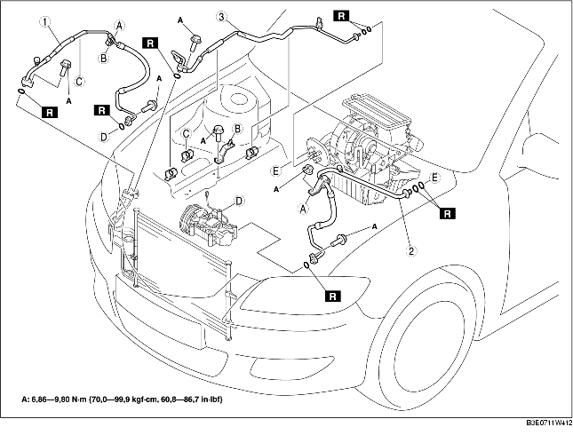

1. Débrancher le câble négatif de la batterie.
2. Décharger le liquide frigorigène du système. (voir la section RÉCUPÉRATION DE RÉFRIGÉRANT.) (voir la section CHARGEMENT DE REFRIGERANT.)
3. Déposer le réservoir de réserve de liquide P/S.
4. Déposer le réservoir de réserve de liquide de refroidissement. (voir la section DEPOSE/REPOSE DE RESERVOIR DE RESERVE DE LIQUIDE DE REFROIDISSEMENT.)
5. Déposer le câble d'accélérateur.
6. Déposer le support de flexible de liquide P/S.
7. Déposer le cache inférieur.
8. Déposer les différents éléments selon l'ordre indiqué dans le tableau. Veiller à ne pas renverser d'huile de compresseur.
9. Pour la repose, suivre l'ordre inverse de la dépose.
10. Effectuer le test de performances du système de réfrigération. (voir la section TEST DE PERFORMANCES DU SYSTEME REFRIGERANT.)

.
|
1
|
Flexible de refroidisseur (HI)
(voir la section Note sur la dépose de conduite de liquide frigorigène.)
(voir la section Note sur la repose des conduite de liquide frigorigène.)
|
|
2
|
Flexible de refroidisseur (LO)
(voir la section Note sur la dépose de conduite de liquide frigorigène.)
(voir la section Note sur la repose des conduite de liquide frigorigène.)
|
|
3
|
Tuyau de refroidisseur
(voir la section Note sur la dépose de conduite de liquide frigorigène.)
(voir la section Note sur la repose des conduite de liquide frigorigène.)
|